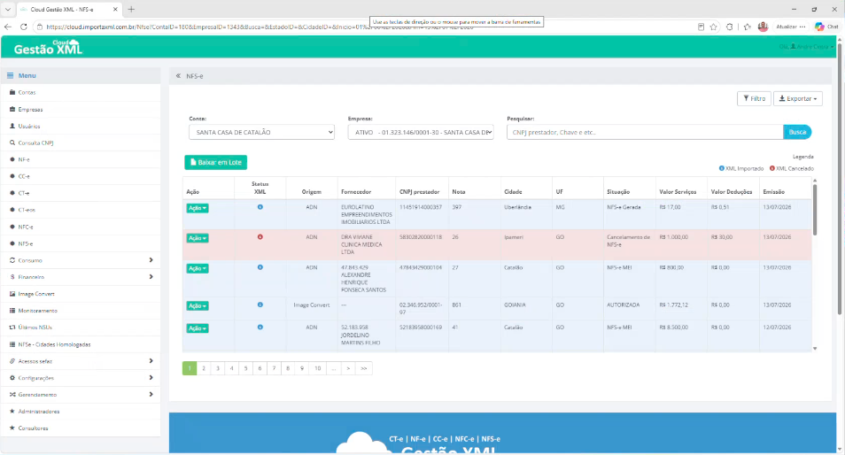
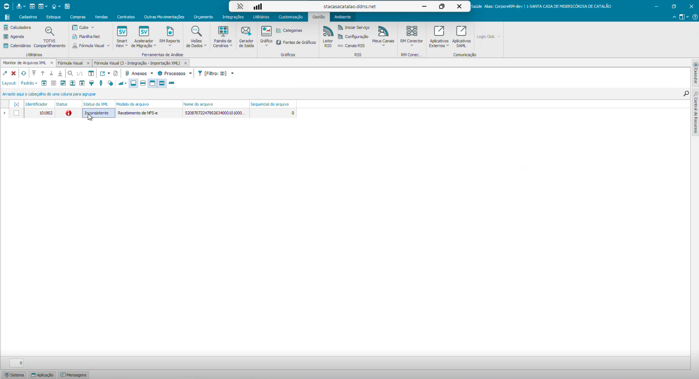
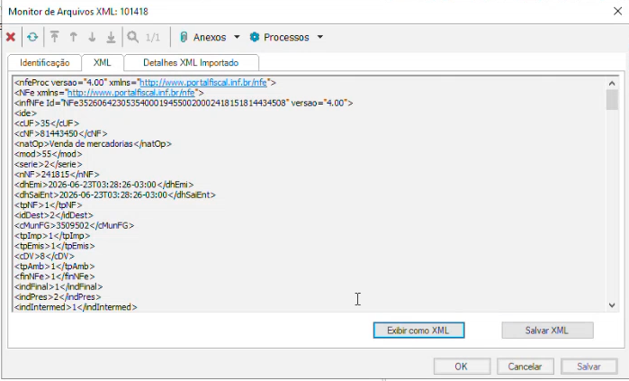
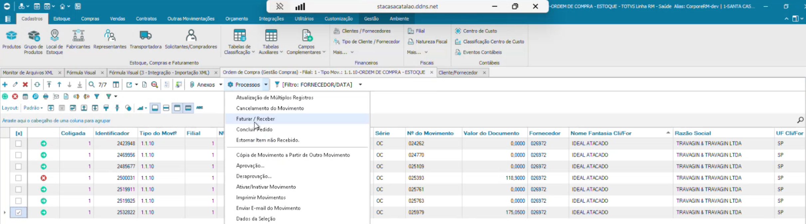
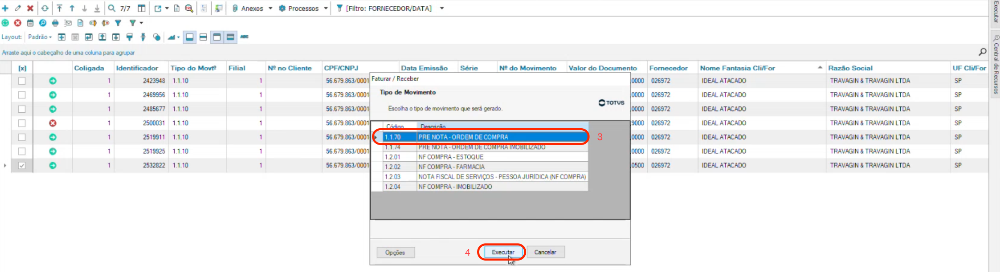
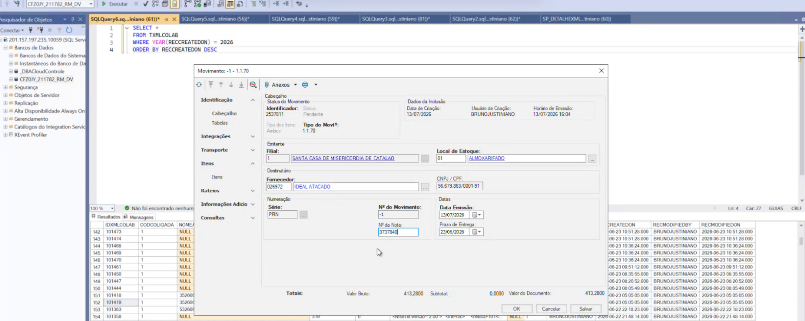
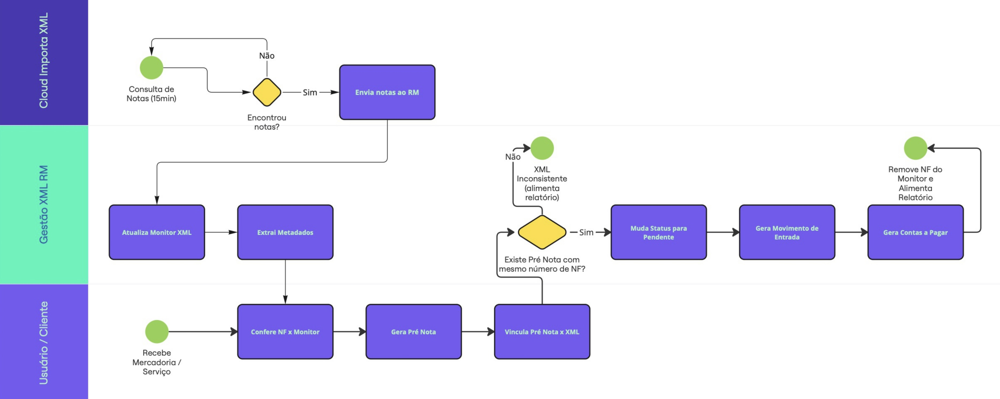

Mapeamento do Processo do
Recebimento Fiscal
1. Introdução
1.1 Sobre o Gestão XML
O Gestão XML Protheus é uma solução especializada na automação e governança do processo de escrituração fiscal dentro do ERP do cliente. A plataforma é responsável por interpretar documentos fiscais, aplicar regras de negócio previamente definidas e realizar o tratamento automatizado das informações, reduzindo atividades operacionais e aumentando a confiabilidade dos lançamentos. Por meio de uma estrutura altamente parametrizável, a solução permite adaptar o processamento fiscal às particularidades de cada organização, atendendo diferentes segmentos de mercado, legislações e processos internos. Atualmente, o produto conta com mais de 300 parâmetros configuráveis para suportar regras fiscais, tributárias e operacionais específicas de cada cliente. Além da automação da escrituração, a plataforma fornece mecanismos de validação, controle e acompanhamento dos processos, contribuindo para maior segurança fiscal e conformidade regulatória.
A solução atende empresas que buscam automatizar e fortalecer seus processos fiscais, especialmente em cenários com: Alto volume de documentos fiscais,Operações distribuídas entre múltiplas filiais, Regras tributárias complexas, Necessidade de controles específicos por fornecedor ou unidade de negócio,Exigências rigorosas de compliance fiscal e Busca por redução de atividades manuais e retrabalho
Sobre a aplicação no ERP TOTVS RM
O Gestão XML RM é uma solução voltada para a automação do processo de escrituração fiscal no ERP TOTVS RM, responsável pela interpretação, validação e lançamento estruturado de documentos fiscais. A plataforma utiliza um movimento intermediário de Pré-Nota para vincular o documento eletrônico à Ordem de Compra, garantindo rastreabilidade ao processo. O produto encontra-se em evolução, com aprimoramentos sendo implementados para expandir sua parametrização e governança.
Este documento tem como finalidade apresentar o cenário atual (AS IS) dos processos estabelecidos no Gestão XML RM, identificar os principais gaps, dificuldades e oportunidades de melhoria, bem como definir o modelo futuro (TO BE) alinhada às capacidades já consolidadas no Gestão XML Protheus. O material servirá como referência técnica para orientar o planejamento e a evolução do produto RM.
2. AS IS — Processo Atual de Entrada de Nota Fiscal no RM
2.1 Visão Geral do Processo
O processo de entrada de notas fiscais no Gestão XML RM atualmente trabalha apenas com o recebimento de NFSe e NFe, o fluxo é iniciado com a
emissão do documento pelo fornecedor, contra o CNPJ da empresa.
A partir deste ponto, o fluxo é composto pelas seguintes etapas:
2.1.1 Captura automática do XML
O Cloud atualmente é responsável por realiza buscas periódicas (a cada 15 minutos) nos ambientes da SEFAZ (para notas de produto / material) e no Ambiente Nacional (para notas de serviço), identificando todos os XMLs emitidos contra o CNPJ do cliente. Os arquivos identificados são transferidos para o monitor de arquivos XML do RM (tela nativa do sistema) adaptada para receber os XMLs via Fórmula Visual.
Exemplo de tela pós recebimento da NFe/NFSe no Cloud:

Monitor RM para recebimento de novas oriundas do Cloud:

2.1.2 Geração de metadados e visualização
Imediatamente após a chegada, uma rotina automática extrai as principais informações do XML (número da nota, série, CNPJ e nome do fornecedor, data de emissão, natureza da operação, valor total, itens com NCM, quantidade e valor unitário) e as armazena em uma tabela de metadados, acessível por uma tela customizada. Essa etapa visa facilitar a consulta dos dados relevantes sem a necessidade de abrir o XML bruto.
Como os meta dados aparecem no GXML RM:

2.1.3 Vinculação manual da nota ao pedido (Pré-Nota)
O XML chega ao monitor com o status inconsistente, pois ainda não há vínculo com nenhum pedido de compra. Para estabelecer esse vínculo, o operador da área de recebimento acessa a ordem de compra no RM, gera uma Pré-Nota e informa manualmente o número da nota fiscal que está sendo recebida. Essa é a única ação manual de todo o processo e é necessária porque:
- Os fornecedores, em sua maioria, não preenchem a tag com o número do pedido no XML.
- A sequência de itens na nota não costuma corresponder à sequência do pedido.
- As descrições e códigos dos produtos não são padronizados entre fornecedor e cliente.
Assim, o operador atua como um "double check", garantindo que a nota recebida corresponde exatamente ao que foi pedido – especialmente em casos de recebimento parcial, onde ele deve criar a pré-nota apenas com os itens efetivamente recebidos.
É importante destacar que a pré-nota pode ser gerada antes mesmo do XML chegar ao monitor – se o operador já tiver a nota em mãos (via e-mail ou física), ele pode cadastrá-la antecipadamente. Quando o XML chegar, o vínculo será feito automaticamente.
Como a Prenota é feita:



2.1.4 Vinculação automática e mudança de status
Após a criação da pré-nota, uma automação (fluxo que roda a cada 15 minutos) verifica se há correspondência entre o número da nota informado na pré-nota e os XMLs presentes no monitor. Quando encontra a correspondência, ele preenche o campo "Ordem de Compra" no registro do XML e altera o status de inconsistente para pendente – sinalizando que a nota está apta para ser processada.
2.1.5 Processamento automático e geração do recebimento
Com o status pendente, uma segunda automação (executada a cada 30 minutos) realiza o processamento da pré-nota. Esse processo equivale à ação manual de "faturar a receber" e gera automaticamente:
- O movimento de entrada de mercadoria (estoque),
- O lançamento contábil (débito e crédito),
- O título a pagar para o fornecedor (também conhecido como "Contas a Pagar"(com as condições de pagamento definidas no pedido)).
2.1.6 Finalização e monitoramento
Após o processamento bem-sucedido, o XML é removido do monitor e o fluxo é concluído. Para garantir a rastreabilidade e a rápida identificação de problemas, a equipe mantém uma planilha de controle que consolida:
- Notas que não foram recebidas e o motivo do erro (ex.: falta de parametrização contábil, CNPJ não cadastrado, divergência de valores);
- Quantitativos diários e mensais de recebimentos por tipo de movimento;
- Pré-notas pendentes aguardando XML;
- Comparação entre informações do XML e do movimento gerado.
Essa planilha permite que o time técnico atue proativamente na correção de falhas, enquanto a área operacional pode validar rapidamente se alguma nota não processada é legítima ou exige ajuste.
2.2 Estrutura Organizacional e Papéis
O processo de entrada de Notas fiscais no GXML RM envolve três perfis de responsabilidade
-
Operador da área de recebimento de NFe/NFS:
É o responsável por gerar a Pré-Nota a partir da Ordem de Compra, informando o número da nota fiscal que está sendo recebida. Essa é a única ação manual de todo o fluxo. O operador também deve conferir se os itens constantes na nota correspondem ao que foi efetivamente recebido (especialmente em casos de recebimento parcial) e, se necessário, ajustar a ordem dos itens quando há inversão de sequência (ex.: lote de produtos). Esse perfil atua diretamente no sistema RM, utilizando as telas nativas de faturar a receber e os metadados customizados.
- Equipe de Suporte / Desenvolvimento WeeUp:
Responsável por manter as integrações e as customizações da solução, monitorar a execução dos processos automáticos de captura e processamento dos XMLs e analisar eventuais inconsistências relacionadas ao funcionamento do produto. Durante esse acompanhamento, a equipe também pode identificar possíveis problemas de parametrização contábil, fiscal ou operacional existentes no ERP do cliente, comunicando-os para as áreas responsáveis. A correção dessas parametrizações, quando necessária, é realizada por meio de um projeto específico de revisão e não faz parte das atividades de suporte da solução.
A análise inicial das notas pendentes ou com inconsistências é de responsabilidade da equipe operacional do cliente, que verifica se a causa está relacionada às parametrizações do ERP, às regras de negócio ou aos dados do documento fiscal. A equipe WeeUp atua quando a inconsistência está relacionada às customizações ou integrações da solução, ou quando há indícios de que uma nota que deveria ter sido recebida ou processada pelo sistema não foi tratada corretamente. - Gestão de TI (Cliente):
Atua como elo entre a área de negócio (usuários) e a equipe técnica, ajudando a alinhar expectativas, priorizar correções e garantir que os ajustes necessários sejam feitos de forma estruturada.
2.3 Fluxo Detalhado — Cenário Atual (AS IS)

2.4 Problemas e Dores Identificadas
| Categoria | Situação identificada |
|---|---|
| Herança de parametrização do ERP | Foram identificadas inconsistências pré-existentes na parametrização dos movimentos do RM, como divergências em valor líquido, cálculo de impostos e frete. Essas configurações já estavam presentes antes da integração e passaram a ficar mais evidentes durante a utilização da automação, sendo, em alguns momentos, associadas ao funcionamento da ferramenta. |
| Requisitos levantados durante a execução | Alguns requisitos, como controle de lote e tratamento do valor de frete, foram identificados ao longo da implantação e não estavam contemplados no levantamento inicial. Isso demandou a implementação de ajustes em produção, reduzindo o tempo disponível para planejamento e validação. Em alguns momentos, esse cenário se repetiu, resultando no desenvolvimento de funcionalidades antes da consolidação do processo de negócio, evidenciando uma oportunidade de fortalecer a etapa de levantamento e validação de requisitos. |
| Dependência de Ação Manual |
A única ação manual – inserir o número da nota na pré-nota – permanece necessária devido a características do processo de origem:
|
| Adoção e aderência dos usuários | Após as primeiras dificuldades encontradas durante a implantação — principalmente relacionadas às parametrizações existentes no ERP e à identificação de novos requisitos — observou-se uma redução na confiança dos usuários em relação à ferramenta. Como consequência, sua utilização acaba sendo limitada em determinados momentos, dificultando a validação das melhorias implementadas e aumentando a necessidade de novos ciclos de treinamento e acompanhamento pela equipe técnica da WeeUp / WeePulse. |
| Padronização e documentação da arquitetura | Ao longo do projeto, diversas evoluções e adequações foram incorporadas conforme novas necessidades surgiam durante a implantação. Em alguns casos, essas demandas ainda não estavam respaldadas por processos de negócio formalmente definidos, tornando a evolução da solução mais reativa e aumentando a necessidade de ajustes durante sua implementação. Como oportunidade de melhoria, recomenda-se fortalecer a documentação da arquitetura, a definição dos processos e o alinhamento dos requisitos antes da implementação de novas funcionalidades. |
| Disponibilização de relatórios | Atualmente, os relatórios do produto são disponibilizados ao cliente por meio de planilhas. Como oportunidade de evolução, recomenda-se a disponibilização dessas informações diretamente na plataforma, proporcionando uma experiência mais integrada, maior autonomia aos usuários e um posicionamento mais alinhado às expectativas de uma solução de mercado. |
| Cliente piloto | O GXML RM encontra-se atualmente implantado apenas no cliente piloto Santa Casa Catalão. Durante a implantação, observou-se que alguns processos de negócio ainda estavam em fase de consolidação, o que exigiu adaptações frequentes na solução ao longo do projeto. A adoção da ferramenta em novos clientes, com processos mais consolidados e alinhamento prévio das regras de negócio, tende a ampliar a validação do produto, contribuir para sua evolução e favorecer a construção de funcionalidades mais padronizadas. |
2.5 Análise do Cenário Atual e Considerações
O cenário atual do Gestão XML RM revela um produto que, do ponto de vista técnico, já cumpre seu papel com relativa eficiência: a busca, o vínculo (via número da nota) e o processamento automático (atualmente automação assistida, ou seja, que depende de uma ou mais ação manual) da entrada fiscal estão funcionando. As automações de integração operam em intervalos regulares e a planilha de controle oferece boa visibilidade dos erros e pendências. No entanto, a maturidade operacional e de governança ainda é baixa. As dores mais significativas não são técnicas, mas comportamentais e de gestão de projeto:
- O cliente não engajou na fase de validação, o que gerou um acúmulo de correções emergenciais.
- A parametrização do RM já estava comprometida antes da integração segundo relatos do time técnico. Com a implementação do GXML RM, as falhas da parametrização ficaram mais explicitas, que passaram a ser vistas como erro / falha do GXML
- Cultura da área operacional é resistente à mudança, preferindo o recebimento manual mesmo quando a ferramenta já oferece soluções (ex.: inclusão de lote já está corrigido, mas os usuários não testam).
- A falta de padronização dos fornecedores (ausência de número de pedido, sequência de itens inconsistente, descrições divergentes) inviabiliza uma automação total, exigindo um ponto de verificação humana – o que é visto como um "gargalo", mas na verdade é uma proteção necessária.
Em suma, o AS IS mostra um processo funcional, mas imaturo, com grande dependência de pessoas-chave e com um histórico de desgaste (de ambos) que prejudica a credibilidade da solução. O desafio atual é reconstruir a confiança e alinhar a parametrização de base para que a automação gere valor real, em vez de apenas reproduzir erros existentes.
3. TO BE — Evolução GXML RM
3.1 Visão Geral do Processo Futuro
.